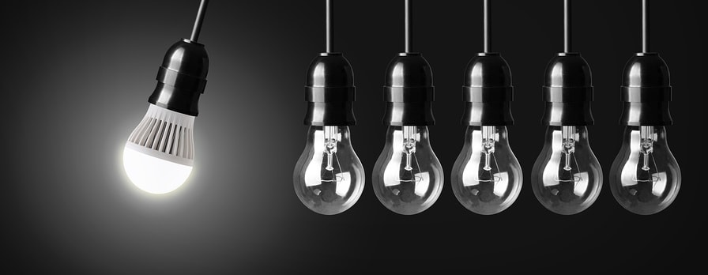

<div class="parallax-container" style="z-index: 46; background-color: #191919;;">
    <div style="float: right; width: 50%; height: 100%; z-index: 47; background-color: #0F0F0F;"></div>
    <div class="container parallax" style="z-index: 48"></div>
</div>
<div class="container" style="position: relative; z-index: 49">
    <div style="position: absolute; top: -75px;left: 25px; z-index: 50">
         <!-- notice the "circle" class -->
    </div>
    <div class="col" style="position: relative;">

        <div class="row" style="height: 80px;">
        </div>

        <div class="row">
            <b>Blog Posts</b>
        </div>

        <div class="row">
            <ul>
                {% for post in site.posts %}
                <li>
                    <span class="post-meta">{{ post.date | date: "%b %-d, %Y" }}</span>
                    <h5>
                        <a class="post-link" href="{{ post.url | prepend: site.baseurl }}">{{ post.title }}</a>
                    </h5>
                </li>
                {% endfor %}
            </ul>
        </div>

        <div class="row">
            <p class="rss-subscribe">subscribe <a href="{{ "/feed.xml" | prepend: site.baseurl }}">via RSS</a></p>
        </div>

    </div>
</div>
